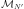
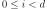

KarhunenLoeveProjection¶
- class KarhunenLoeveProjection(*args)¶
Function dedicated to the projection of fields on a Karhunen-Loeve basis.
- Parameters
- KLResult
KarhunenLoeveResult The result structure created by a
KarhunenLoeveAlgorithm
- KLResult
Notes
The class
KarhunenLoeveProjectionis a specific functionFieldToPointFunctiondedicated to the projection of fields on a Karhunen-Loeve basis.See the documentation of
KarhunenLoeveResultto get information on the projection function.The function acts on
FieldorProcessSampleassociated to aMeshwith an input dimension equal to .
.Methods
__call__(*args)Call self as a function.
Get the number of calls of the function.
Accessor to the object's name.
getId()Accessor to the object's id.
Get the description of the input field values.
Get the dimension of the input field values.
Get the mesh associated to the input domain.
getMarginal(*args)Get the marginal(s) at given indice(s).
getName()Accessor to the object's name.
Get the description of the output vector.
Get the dimension of the output vector.
Accessor to the object's shadowed id.
Accessor to the object's visibility state.
hasName()Test if the object is named.
Test if the object has a distinguishable name.
setInputDescription(inputDescription)Set the description of the input field values.
setName(name)Accessor to the object's name.
setOutputDescription(outputDescription)Set the description of the output vector.
setShadowedId(id)Accessor to the object's shadowed id.
setVisibility(visible)Accessor to the object's visibility state.
- __init__(*args)¶
- getCallsNumber()¶
Get the number of calls of the function.
- Returns
- callsNumberint
Counts the number of times the function has been called since its creation.
- getClassName()¶
Accessor to the object’s name.
- Returns
- class_namestr
The object class name (object.__class__.__name__).
- getId()¶
Accessor to the object’s id.
- Returns
- idint
Internal unique identifier.
- getInputDescription()¶
Get the description of the input field values.
- Returns
- inputDescription
Description Description of the input field values.
- inputDescription
- getInputDimension()¶
Get the dimension of the input field values.
- Returns
- dint
Dimension
 of the input field values.
of the input field values.
- getInputMesh()¶
Get the mesh associated to the input domain.
- Returns
- inputMesh
Mesh The input mesh .
- inputMesh
- getMarginal(*args)¶
Get the marginal(s) at given indice(s).
- Parameters
- iint or list of ints, 
Indice(s) of the marginal(s) to be extracted. output vector.
- Returns
- function
KarhunenLoeveProjection The initial function restricted to the concerned marginal(s) at the indice(s)
 .
.
- function
- getName()¶
Accessor to the object’s name.
- Returns
- namestr
The name of the object.
- getOutputDescription()¶
Get the description of the output vector.
- Returns
- outputDescription
Description Description of the output vector.
- outputDescription
- getOutputDimension()¶
Get the dimension of the output vector.
- Returns
- d’int
Dimension
 of the output vector.
of the output vector.
- getShadowedId()¶
Accessor to the object’s shadowed id.
- Returns
- idint
Internal unique identifier.
- getVisibility()¶
Accessor to the object’s visibility state.
- Returns
- visiblebool
Visibility flag.
- hasName()¶
Test if the object is named.
- Returns
- hasNamebool
True if the name is not empty.
- hasVisibleName()¶
Test if the object has a distinguishable name.
- Returns
- hasVisibleNamebool
True if the name is not empty and not the default one.
- setInputDescription(inputDescription)¶
Set the description of the input field values.
- Parameters
- inputDescriptionsequence of str
Description of the input field values.
- setName(name)¶
Accessor to the object’s name.
- Parameters
- namestr
The name of the object.
- setOutputDescription(outputDescription)¶
Set the description of the output vector.
- Parameters
- outputDescriptionsequence of str
Description of the output vector.
- setShadowedId(id)¶
Accessor to the object’s shadowed id.
- Parameters
- idint
Internal unique identifier.
- setVisibility(visible)¶
Accessor to the object’s visibility state.
- Parameters
- visiblebool
Visibility flag.